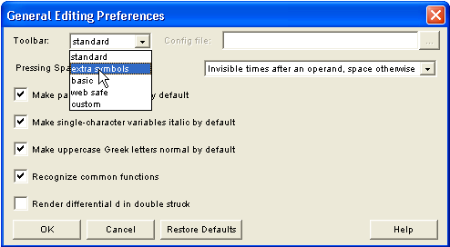

WebEQ Editor allows you to customize several aspects of its user interface. This is done from the Preferences | General Editing dialog.
The Toolbar pulldown menu lets you select between several standard pre-defined toolbar configurations by using the pulldown menu on the left.

You can also load a custom toolbar from a toolbar configuration file. To do this, choose "custom" from the pulldown, which then activates the input field for a toolbar configuration file. Enter the path to your toolbar configuration file.
In editing MathML, the need to insert an InvisibleTimes character is extremely common. Since MathML groups runs of characters into tokens, just typing "xy" leads to a single two-character token, typeset in an upright font. However, what you probably meant was "x InvisibleTimes y" typeset as two single-character tokens in an italic font.
To make entering InvisibleTimes more convenient, WebEQ Editor gives you several options for the spacebar behavior.
Forcing a space -- Note that if you hit the spacebar twice, you will always get a true space character the second time, since the first character (InvisibleTimes or space) is never an operand. So if you want a space where the default was InvisibleTimes, you hit spacebar twice to get 'InvisibleTimes', ' ' and then backspace over the InvisibleTimes.
Forcing an InvisibleTimes -- If you need an InvisibleTimes when space is the default, insert it from the invisible characters palette on the standard toolbar.
MathML specifies that by default parentheses stretch vertically to surround the tallest item in the same template slot with them. As a side effect, this behavior forces you to be more conscious of putting in the proper group for the mathematical structure of an equation. However, many authors are more comfortable with parentheses that don't stretchy unless they tell them to.
If you set your preference to non-stretchy parentheses, parens won't
stretch unless you edit their operator properties, and manually set the
stretchy property to true. Also, the parentheses in the parentheses
template from the standard toolbar are always stretchy regardless of
this setting.
MathML specifies that the default font for single character identifiers is italic, while for multi-character identifiers the default is upright. This is extremely convenient for mathematics where this guideline is almost always followed. However, this is not the case in other disciplines, notably chemistry. Therefore, you can choose whether single character identifiers are to be set in italics by default.
Sometimes it is desirable to not automatically italicize uppercase Greek letters, even if auto-italic behavior is selected. There is an option to choose whether uppercase Greek letters should be normal by default. Even if auto-italic behavior is checked, uppercase Greek letters can be made normal (in effect overriding the auto-italic behavior).
Regardless of these settings, you can always change the font by manually setting the logical font property in a token's font properties dialog.
WebEQ Editor has two modes for determining how keystrokes should be interpreted. In the default mode where auto-recognition of functions is enabled, each keystroke is assumed to be a separate variable, number or operator. Thus, typing 'x','y','z' will be interpreted as individual variables (<mi>x</mi><mi>y</mi><mi>z</mi> in the MathML markup) and typeset in italics accordingly. At the same time, the WebEQ Editor scans the equation for common elementary function names, such as 'sin' and 'log'. When it sees these functions, it automatically merges the characters into a single function name and typesets the result in an upright serif font. This mode produces the best results for most users, and will be familiar to users of Design Science Equation Editor and MathType.
Some users that want to have explicit control over how keyboard data is tokenized into MathML elements may wish to turn auto-recognition of functions off. In this mode, number and alphabetic characters from the keyboard are all placed in the same MathML token element. To start a new token, the user must insert a new element, usually by inserting an "invisible times" character via the spacebar. Thus, in this mode, typing 'x', 'y', 'z' produces a single identifier (<mi>xyz</mi> in the MathML) typeset in an upright serif font. To obtain the italic variables multiplied together, one would need to type 'x', spacebar, 'y', spacebar, 'z'. Most users do not need or desire this level of control over markup, but from time to time it it still useful for modifying equations where the results of auto-function recognition are not what was desired.
MathML uses a special "differential d" character to indicate differentiation. This semantic hint is valuable for properly interpreting MathML in a computer algebra system. In particular, Mathematicatm has introduced the convention of using a doublestruck (or openface) font to render the diffferential d character. In some situations, authors may wish to follow this convention by enabling the "use double struck differential d" option. By default, this option is disabled, and the differential d character will display with a normal serif d, as is more traditional in mathematical typesetting.